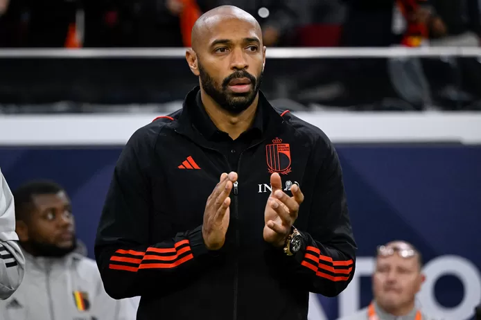

.

Schuiven Lukaku en Alderweireld Thierry Henry terecht naar voren als nieuwe bondscoach? Deels, maar er zijn ook vraagtekens.
Romelu Lukaku zegt: “Thierry Henry mag onze volgende bondscoach worden.” Toby Alderweireld noemt hem de “ultieme oplossing”. Hoe serieus moeten we Thierry Henry (45) nemen als kandidaat-bondscoach? We wegen de Fransman af op de acht belangrijkste punten uit de vacature van de bond. Op het eerste zicht vinkt hij alle vakjes af. Maar een béétje headhunter zal ook die paar gebreken opvallen.
.